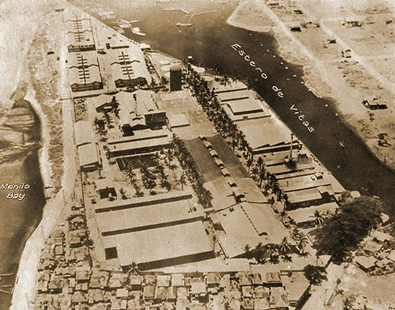

|
j
a v a s c r i p t |
Pg.2/9
March 22, 1945
The destruction of the Ermita side of the Boulevard is total. Hundreds of military tents have sprung up past Malate and almost in Pasay. Two radar stations are also up and some antiaircraft batteries are being installed that I think will be radar-controlled ... or am I talking about the next war? At one section of the Boulevard Extension, the Japanese removed and concreted the center divider to make an emergency landing field. Under a little grove of tall trees a Japanese dispersal area was strewn with the wreckage of about ten planes, including a trainer and a new-type Zero with a 16-cylinder motor, two wing-mounted 50-mm. guns and two nacelle guns. The latter is almost intact and I'm told will be repaired. . . . . And so to Theo's at Pasay, where he is resting quietly, waiting for a day "at least a year from now" when his firm will be able to go to work again. The Philippine Manufacturing Company was destroyed except for its power plant, which the Americans are now using. Someone in GHQ told him there's not the slightest chance of getting in building materials or machinery from the States — notwithstanding the fact that people here need LARD and SOAP.

Prewar Philippine Manufacturing Company
Theo is in good shape. Some GHQ officers live nearby and bring him flour and potatoes. Other officers on the other side brought him cheese, butter and jam; and he gets bread from the nearby Soldier's Mess. He wasn't even aware of the special Swiss rations that Luthi was distributing. Next door, Frederick Knecht told me: "You know, yesterday some Americans brought me 40 pancakes ... no, it was 39. Anyway, I had 16 for breakfast, but I had to take Bicarbonate of Soda after." Went to the Sotelos this afternoon, where some Americans brought cold beer and ice cream. Some leakage! And mind you, GHQ big shots do the same as the soldiers. They also want to appear BIG and magnanimous — with Uncle Sam's supplies. The unfortunate part of all this is that the food thus strewn around goes to those who don't really need it. Well, the soldiers' messes do give food to the poor — until they are so swamped by unruly kids that their patience runs out — then that's the end of that. This evening I saw my good friend Guidote, a fine chap and perhaps the only one I didn't have to ask for his story. It was a good one too but I couldn't take notes. He was on the Paco side of Taft Avenue, close to Kessler. Three groups of his family were in Malate and, wonder of wonders, through thick and thin, and especially through the Ateneo conflagration, all — BUT ALL — escaped safely. Bruised, wounded perhaps, as he was, but SAFE. I asked him what his brother said about the Ateneo fire — where did it begin? "In the second floor, which [second and third] was made of wood." The Japanese had thrown gasoline in one room of the Ateneo when the fires began. The door was partially opened and suddenly there was a terrific rush for that sole exit. "You had to climb over bodies three feet high to get out!" ...ooOoo... |
|
|
|
|